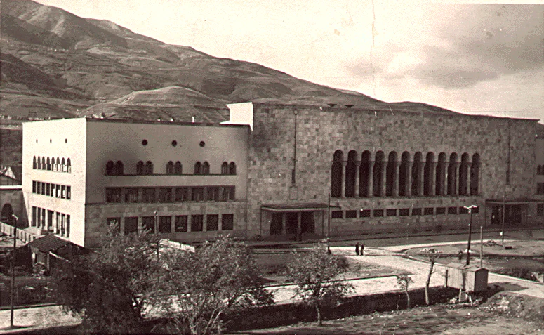
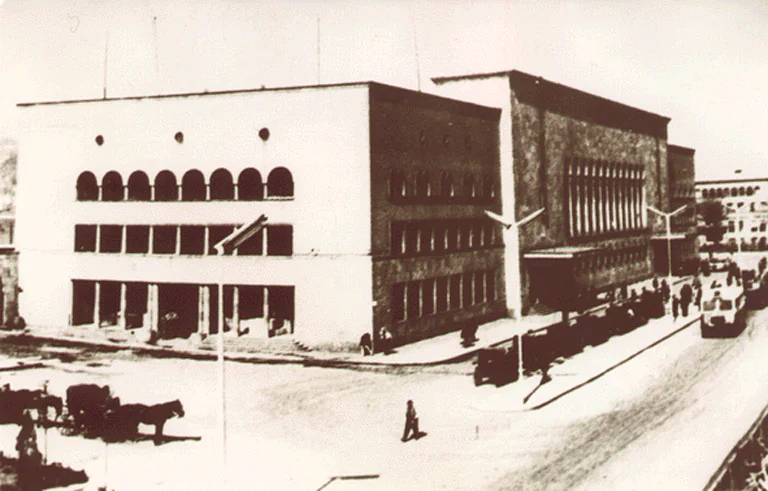

Vlak prihaja
- Scenarij in režija
- Trajče Popov
- Snemalec
- Branko Mihajlovski
- Leto
- 1951
- Trajanje
- 00:09

Stara železniška postaja s konca 19. stoletja. Zgrajena je bila leta 1873 v času Osmanskega cesarstva. Na razglednici se vidi glavni vhod postaje, zadaj pa so bili tiri. Arhitektura nosi poteze neoklasicističnega sloga. V ospredju je prodajalka mlečnih izdelkov.

Stara železniška postaja s konca 19. stoletja. Zgrajena je bila leta 1873 v času Osmanskega cesarstva. Na razglednici se vidi glavni vhod postaje, zadaj pa so bili tiri. Arhitektura nosi poteze neoklasicističnega sloga.

Prva železniška postaja. Posneta z zadnje strani. (začetek 20. stoletja)

Stara železniška postaja z zadnje strani. (začetek 20. stoletja)

„Nova železniška postaja“ - gradnja se je začela leta 1937. 1. decembra 1940 je bila predana v uporabo, čeprav peron še ni bil dokončan in oblikovanje stebrov ni bilo zaključeno. Odlikuje se z uporabo modernih oblik in interpretacijo bizantinskih, romantičnih in ljudskih oblik. V katastrofalnem potresu 26. julija 1963 se je porušilo 2/3 stavbe. Preostala 1/3 je bila sanirana in v njej je danes Muzej mesta Skopje. Stavba je danes spomenik katastrofalnemu potresu 26. julija 1963. Ustavljena ura nad vhodom v Muzej mesta Skopje kaže 05 ur in 17 minut, tragični trenutek 26. julija 1963.

Železniška postaja med drugo svetovno vojno.

Železniška postaja po drugi svetovni vojni (današnji Muzej mesta Skopje), s strani glavnega vhoda.

Železniška postaja po drugi svetovni vojni (današnji Muzej mesta Skopje), s strani peronov.

Peron železniške postaje - 1940.

Železniška postaja v gradnji - posneta z zadnje strani - 1940-a leta.

Železniška postaja v gradnji - posneta s sprednje strani - 1940-a leta.

Razglednica-kolaž, ki s štirimi fotografijami prikazuje zgodovino železniških postaj v Skopju.

Novi prometni center. (1980-a leta)


 Akvadukt4 razglednice
Akvadukt4 razglednice Kale30 razglednic
Kale30 razglednic Mostovi60 razglednic
Mostovi60 razglednic Nabrežje58 razglednic
Nabrežje58 razglednic Trg46 razglednic
Trg46 razglednic Stavbe66 razglednic
Stavbe66 razglednic Krščanski templji19 razglednic
Krščanski templji19 razglednic Muslimanske stavbe33 razglednic
Muslimanske stavbe33 razglednic Oficirski dom29 razglednic
Oficirski dom29 razglednic Gledališče28 razglednic
Gledališče28 razglednic Železniška postaja13 razglednic
Železniška postaja13 razglednic Šole36 razglednic
Šole36 razglednic Parki12 razglednic
Parki12 razglednic Tržnice18 razglednic
Tržnice18 razglednic Ulice38 razglednic
Ulice38 razglednic Panorama I60 razglednic
Panorama I60 razglednic Panorama II30 razglednic
Panorama II30 razglednic Kolaži55 razglednic
Kolaži55 razglednic Poplave9 razglednic
Poplave9 razglednic Potres27 razglednic
Potres27 razglednic Skopje 200026 razglednic
Skopje 200026 razglednic